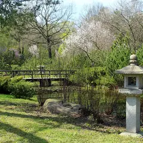
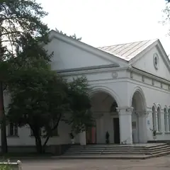
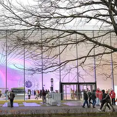
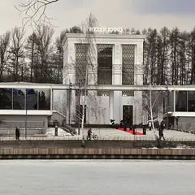

У метро · СВАО
Куда сходить у метро «Ботанический сад»
Для 8 мест из нашего каталога ближайшая станция — «Ботанический сад» (СВАО): 3 музея, 2 места для прогулки, 1 кофейня и 1 ресторан или кафе. Например, «Японский сад», Китайский парк «Хуамин» и «Музей анимации». Недорогих, примерно до 1 500 ₽ на человека, — 5. 8 готовых планов проходят через эту станцию — например, «Китай и Япония за один день», с маршрутом пешком между точками.
- 8 мест
- 8 планов
Места у метро «Ботанический сад» 8

Ботаническая ул., 4
Японский сад в Ботаническом: пагода, водопады и сакура весной. Вход платный.
Подробнее и маршрут: Японский садПозвать сюда: Японский сад
Фото: Carbonkidka, CC BY-SA 4.0 · Wikimedia Commons
ул. Вильгельма Пика
Китайский сад с пагодами, мраморными мостиками и прудом с карпами. Вход бесплатный, 8:00–22:00.
Подробнее и маршрут: Китайский парк «Хуамин»Позвать сюда: Китайский парк «Хуамин»
Фото: Soluxe Hotel Moscow, CC BY-SA 4.0 · Wikimedia Commons

просп. Мира, 119 с84А
Музей мультфильмов на ВДНХ: куклы, декорации и мастер-классы по анимации.
Подробнее и маршрут: Музей анимацииПозвать сюда: Музей анимации
Фото: Dsg-Dsg, CC BY-SA 3.0 · Wikimedia Commons

пр. Мира, 119, стр. 19А
Музей атомной энергии на ВДНХ — один из самых зрелищных павильонов.
Подробнее и маршрут: Павильон «Атом»Позвать сюда: Павильон «Атом»
Фото: Masha.Kondrasheva, CC BY 4.0 · Wikimedia Commons

пр. Мира, 119, стр. 36
Музей кино в павильоне ВДНХ: костюмы, декорации и интерактивные залы.
Подробнее и маршрут: Музей киноПозвать сюда: Музей кино
Фото: Gerarus, CC BY-SA 3.0 · Wikimedia Commons
пр. Мира, 119, стр. 40
Пекарня Masa Madre в историческом павильоне «Хлебопродукты» на ВДНХ. 12–22.
Подробнее и маршрут: Cafeteria de MadreПозвать сюда: Cafeteria de Madre
просп. Мира, 119, стр. 27 (ВДНХ)
Новое
16-метровая верёвочная башня на ВДНХ: четыре яруса, около 90 препятствий, маршрут выбираешь сам за 2 часа. Курс — 2 600–3 100 ₽, работает круглый год.
просп. Мира, 119, стр. 512
Бистро на ВДНХ с грилем и сезонным меню.
Готовые планы 8
- Японский сад · Сад · м. Ботанический сад
- 22 минуты пешкомКитайский парк «Хуамин» · Парк
Сначала Японский сад в Ботаническом с пагодой и водопадами, потом минут двадцать с небольшим пешком до бесплатного китайского «Хуамина» с мраморными мостиками и прудом с карпами. Он открыт до 22:00, так что торопиться некуда.
Открыть план: Китай и Япония за один деньПозвать сюда: Китай и Япония за один день
Фото: Carbonkidka, CC BY-SA 4.0 · Wikimedia Commons
- Японский сад · Сад · м. Ботанический сад
- 14 минут пешкомCafeteria de Madre · Пекарня
Осенью японские клёны у пруда становятся багровыми. Потом через ВДНХ — за хлебом и кофе в «Хлебопродукты». Сад работает по сезонному расписанию: проверь перед выходом.
Открыть план: Красные клёны в Японском садуПозвать сюда: Красные клёны в Японском саду
Фото: Carbonkidka, CC BY-SA 4.0 · Wikimedia Commons
- Павильон «Атом» · Музей · м. Ботанический сад
- 9 минут пешкомРестомаркет · Фудхолл
Один из самых зрелищных павильонов ВДНХ, а потом девять минут пешком до Рестомаркета: гирос, фо и бургеры.
Открыть план: Павильон «Атом» и РестомаркетПозвать сюда: Павильон «Атом» и Рестомаркет
Фото: Masha.Kondrasheva, CC BY 4.0 · Wikimedia Commons
- Японский сад · Сад · м. Ботанический сад
- 14 минут пешкомCafeteria de Madre · Пекарня
Пагода и водопады Японского сада в осенних красках, а потом кофе и выпечка Masa Madre в павильоне «Хлебопродукты» на ВДНХ, 14 минут пешком. Пекарня открывается в 12.
Открыть план: Японский сад и свежий хлебПозвать сюда: Японский сад и свежий хлеб
Фото: Carbonkidka, CC BY-SA 4.0 · Wikimedia Commons
- SkyTown · Верёвочный парк · м. Ботанический сад
- 16 минут пешкомДом российской кухни · Фудхолл на ВДНХ
Два часа на верёвочной башне SkyTown высотой до 16 метров — маршрут выбираете сами, — а потом обед в Доме российской кухни: карельский суп с форелью и калитки.
Открыть план: Верёвочная башня и обед на ВДНХПозвать сюда: Верёвочная башня и обед на ВДНХ
- Китайский парк «Хуамин» · Парк · м. Ботанический сад
Пагоды, мраморные мостики и пруд с карпами — вход бесплатный.
Открыть план: Китайский садПозвать сюда: Китайский сад
Фото: Soluxe Hotel Moscow, CC BY-SA 4.0 · Wikimedia Commons
- Музей анимации · Музей · м. Ботанический сад
Куклы и декорации из мультфильмов, а ещё мастер-класс по анимации в музее на ВДНХ.
Открыть план: Мастер-класс по мультфильмамПозвать сюда: Мастер-класс по мультфильмам
Фото: Dsg-Dsg, CC BY-SA 3.0 · Wikimedia Commons
- Rewax Lab · Мастерская свечей · м. ВДНХ
- 19 минут пешкомCafeteria de Madre · Пекарня
Каждая делает ароматическую свечу на свой вкус, а потом булки и кофе в павильоне «Хлебопродукты».
Открыть план: Свечи на ВДНХ и пекарняПозвать сюда: Свечи на ВДНХ и пекарня
Как позвать
- Выбери план, место или событие — в карточке адрес, цены и маршрут в Яндекс Картах.
- Нажми «Позвать сюда» — соберётся приглашение-игра для свидания или голосование для компании.
- Отправь ссылку в любой мессенджер: тебе ответят, а компания отметит, куда и когда может. Бесплатно и без регистрации.